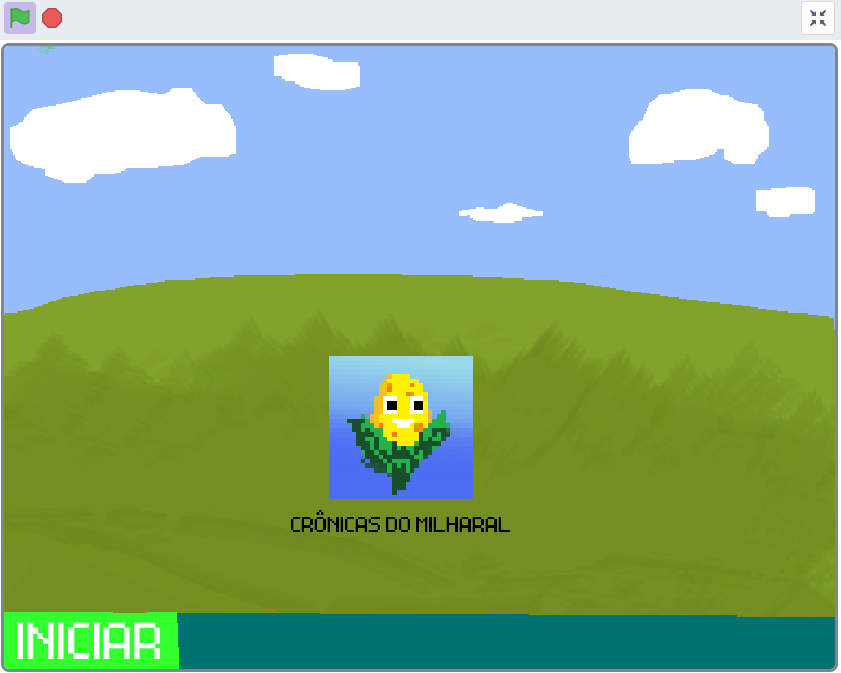
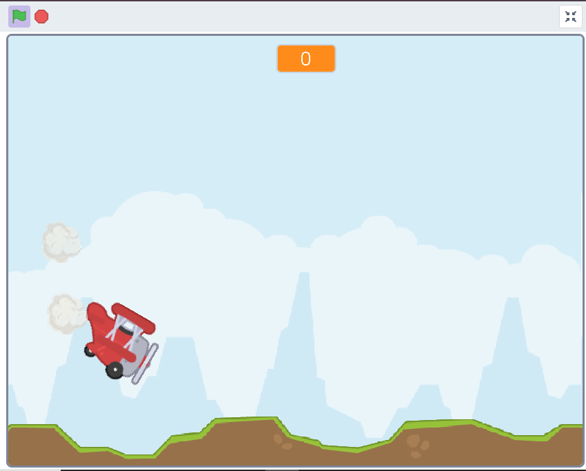
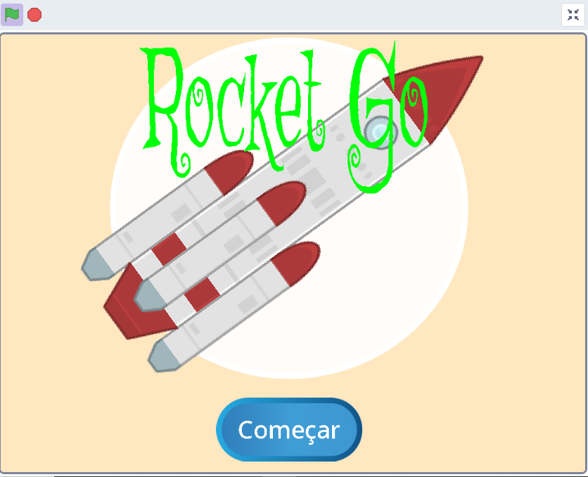

Meus projetos

Crônicas do Milharal
Este projeto é um jogo que fiz para ganhar o Concurso Agrinho 2024. O jogo é simples e consiste em uma busca por milhos evitando explosões.

Desafio das Alturas
Outro projeto que eu criei para ganhar o concurso do agrinho, porém de 2022, o curso Alura disponibiliza como criar este jogo. Ele consiste numa espécie de Flappy Bird, tendo que apertar para dar impulso ao avião e tentar passar pelo meio dos picos de montanha.

Rocket Go
Este projeto fiz no meu tempo livre para conhecer um pouco mais da linguagem Scratch, ela consiste em um foguete tendo que desviar de asteróides, pegar os raios e destruir esses asteróides